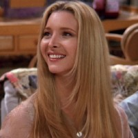

Ross
Ross es un paleontólogo y tiene un doctorado, a menudo refiriéndose a sí mismo como "Dr. Geller" o "Dr. R. Geller". Ross es destacado por ser inteligente, ingenioso, y un tanto artístico. Lo podemos considerar como socialmente torpe y arrogante, pero a la vez algo tierno y cumpliendo con los típicos estereotipos del "nerd”. Ross está enamorado de Rachel desde la escuela secundaria.

Rachel
Rachel se va desarrollando durante la serie. Al principio, ella se destaca por ser "la niña malcriada de papá”, pero con el paso del tiempo, especialmente después de dar a luz a su hija Emma, se vuelve menos egocéntrica y más independiente. Sin embargo, la esencia del personaje, es que sea muy superficial, algo egoísta y la reina del drama. Algo que se debe destacar es el aspecto que tiene su pelo, es el más notable de todo el reparto femenino de la serie.
Chandler
Chandler (el personaje favorito para muchos) es impetuoso, loco, muy defensivo, gracioso (haciendo uso del sarcasmo), leal, tierno y romántico en pocos momentos y tímido. Le encanta burlarse de sus amigos, pero también ayuda a mantenerlos humildes. En el transcurso de la serie podemos ver que es un buen amigo y esposo. Chandler en determinado momento de la serie se da cuenta que esta enamorada de la hermana de uno de sus mejores amigos, Monica, con quien inicia una relación. (Recientemente se supo la trágica noticia que Matthew Perry, el actor que daba vida al personaje, falleció)

Monica
Monica es una persona perfeccionista, obsesiva-compulsiva, cariñosa, perseverante, competitiva y resolutiva. Se la puede considerar como la "madre” del grupo y el pegamento del mismo. Mónica es cómicamente obsesiva sobre su apartamento y le encanta limpiar, describe la tintorería como su Disneyland. Este rasgo de la personalidad se vuelve exagerado cuando la serie avanza. También es notoriamente mandona. A menudo es referida así por sus amigos. Su autoritarismo se ve mejor en su relación con Chandler, dónde ella frecuentemente gana la mano en sus disputas. Monica adora a los niños, y le encataría tener uno propio.

Joey
Joey es una persona simple, extrovertido, tolerante, agradable, y muy sarcástico, no es tan inteligente en comparación de los demás y en varios momentos muestra su lado infantil. Se caracteriza por ser un mujeriego pero de buen carácter al que le encanta la comida. Más allá de ser mujeriego, a lo largo de la serie se nota que es, probablemente, el que tiene más cualidades de "buen amigo", jamás ha roto una promesa y siempre ha sido fiel a sus amigos.

Phoebe
Phoebe es ingenua e inocente debido a que no tuvo una infancia normal, espontanea, creativa, buena amiga y es la ambientalista del grupo (en varias ocasiones hace notar su oposición a las grandes empresas). Phoebe también destaca en el grupo por tener inteligencia callejera, habiendo crecido sin hogar, sabe cómo salir adelante. Ella tiene habilidades musicales algo dudosas.